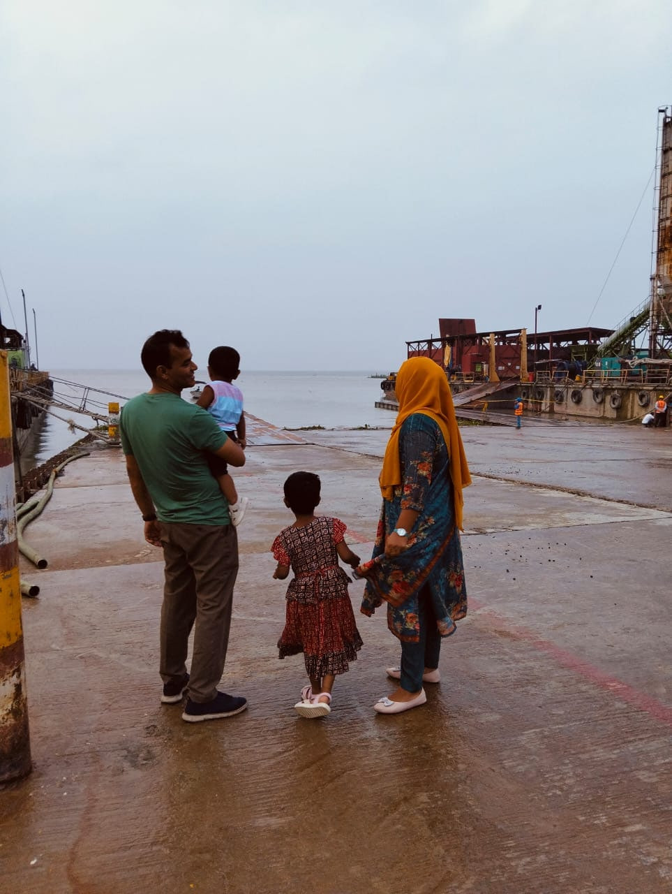

"শব্দদূষণ থেকে আমি প্রায় আলাদা!"
Update: 01
Author:
Blog Number: 06
Posted on:
Nov 10, 2024, 11:00 PM
আজ ফেসবুকে ঢুকে হাসিব রনির আইডি চেক করছিলাম। UCC-র বাংলা টিচার সে। তার প্রোফাইল ঘাটতে গিয়ে হঠাৎ করেই তার বড় ভাইয়ের আইডিতে ঢুকে পড়ি। কৌতূহলী হয়ে প্রোফাইলে ঢোকার পরই তার কভার ফটোর দিকে চোখ আটকে গেল।

কিছুদিন আগে এক অদ্ভুত স্বপ্ন দেখলাম। স্বপ্নে আমি আর তাসমিম একসঙ্গে ঘুরতে গিয়েছি। তাসমিম পানির কাছে যেতে চায়, কিন্তু আমি তাকে বারবার নিষেধ করি। তবুও সে আমার কথা না শুনে পানির দিকে এগিয়ে যায়। হঠাৎ, সে পানিতে পড়ে যায়। তারপরে তাসমিম ভেসে উঠতেই আমি কোনো দ্বিধা না করে ঝাঁপিয়ে পড়ে তাকে উদ্ধার করি।
স্বপ্নের এই দৃশ্যটা ছবির ডান পাশের জায়গার মতো ছিল, অর্থাৎ ডান পাশের সেই উঁচু জায়গা থেকে তাসমিম পরে গিয়েছিলো এবং ছবিতে যেখানে পরিবার দাঁড়িয়ে আছে এগুলা পানিতে তলিয়ে ছিল।